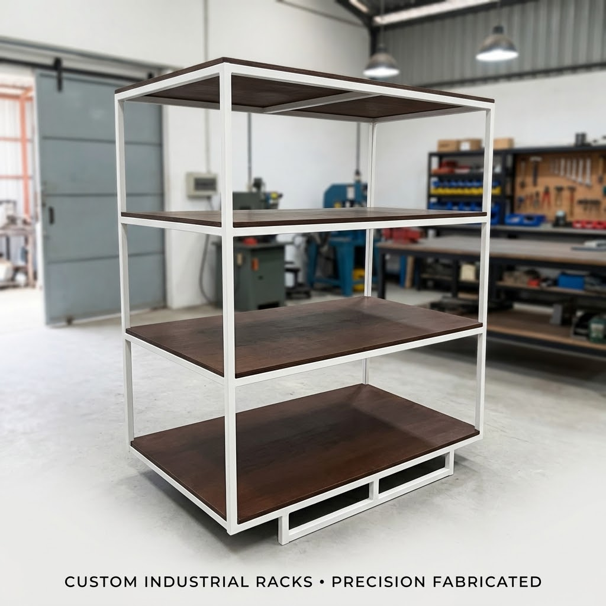

Fabrikasi Rangka Dudukan Mesin & Rak Industri Heavy Duty
Fabrikasi struktur rangka baja kokoh untuk dudukan mesin pabrik, struktur konveyor, dan sistem rak penyimpanan beban tonase berat.


Kami menerima format 2D & 3D: STEP (.stp), IGES (.igs), DWG, DXF, dan PDF. Kerahasiaan data desain dilindungi perjanjian Non-Disclosure Agreement (NDA) resmi.
Konsultasi via WhatsAppDeskripsi Teknis & Karakteristik Part
Rangka mesin industri dan dudukan motor memerlukan integritas struktural berdaya dukung tinggi guna menahan beban statis serta gaya getaran dinamis mesin. PT. Nurcahya Teknik Industry membuat rangka dudukan mesin menggunakan profil baja tebal (UNP 100/120, baja siku SS400, dan hollow 50×50×3.2 mm) dengan pengelasan penetrasi penuh berstandar AWS.
Karakteristik Material Logam yang Diproses
Instrumen Kendali Mutu & Pengukuran (QC)
Aplikasi Sektor Industri
Dapatkan Penawaran Harga Resmi Part Ini
Kirimkan spesifikasi dimensi atau drawing kerja Anda ke PT. Nurcahya Teknik Industry. Tim engineering kami siap memberikan estimasi penawaran harga kompetitif dalam 1×24 jam kerja dengan garansi presisi penuh.